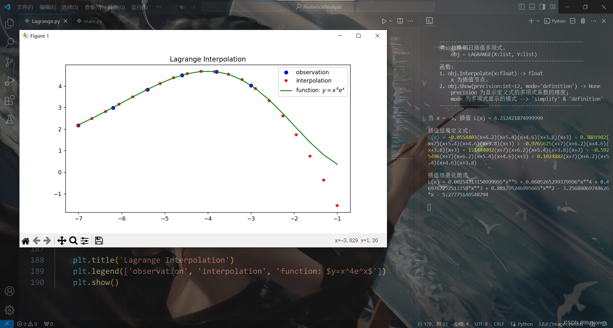

拉格朗日插值¶
Ⅰ. 原理¶
定义点列：
\(\overrightarrow{X}=[x_1,x_2,\dots,x_n]^{\top}\)
\(\overrightarrow{Y}=[y_1,y_2,\dots,y_n]^{\top}\)
定义拉格朗日插值基函数：
\(\mathscr{L}_{i}(x)=\dfrac{\prod\limits_{t=0}^{n\setminus i}(x-x_{t})}{\prod\limits_{t=0}^{n\setminus i}(x_i-x_{t})}\)
定义拉格朗日插值多项式：
\(L_n(x)=\sum\limits_{i=0}^{n}y_i\mathscr{L}_{i}(x)\)
Ⅱ. 代码¶
Lagrange.py¶
1 '''
2 # System --> Windows & Python3.8.0
3 # File ----> Lagrange.py
4 # Author --> Illusionna
5 # Create --> 2023/11/02 15:53:15
6 '''
7 # -*- Encoding: UTF-8 -*-
8
9
10 import copy
11 import numpy as np
12 from typing import Literal
13 from sympy import (symbols, expand)
14
15
16 class LAGRANGE:
17 """
18 --------------------------------------------------
19 类: 拉格朗日插值多项式.
20 obj = LAGRANGE(X:list, Y:list)
21 --------------------------------------------------
22 函数:
23 1. obj.Interpolate(x:float) -> float
24 x 为插值节点.
25 2. obj.Show(precision:int=12, mode='definition') -> None
26 precision 为显示定义式的多项式系数的精度;
27 mode 为多项式显示的模式 --> 'simplify' & 'definition'
28 --------------------------------------------------
29 """
30 def __init__(
31 self,
32 *args,
33 X:list,
34 Y:list,
35 **kwargs
36 ) -> None:
37 self.X = X
38 self.Y = Y
39 self.__base = LAGRANGE.__BaseCoefficients(self)
40
41 def Interpolate(self, x:float) -> float:
42 """
43 拉格朗日插值.
44 """
45 result = 0
46 val = x
47 for i in range(0, len(self.X), 1):
48 temp = list(
49 map(lambda x: val - x, self.X)
50 )
51 temp.pop(i)
52 numerator = np.array(temp).prod()
53 del temp
54 # --------------------------------------
55 """
56 如果想获取更精确的插值，解锁如下注释...
57 """
58 # temp = list(
59 # map(lambda x: self.X[i] - x, self.X)
60 # )
61 # temp.remove(0)
62 # denominator = np.array(temp).prod()
63 # del temp
64 """
65 用如下注释顶替 result 输出结果...
66 """
67 # result = result + (self.Y[i] * numerator / denominator)
68 # --------------------------------------
69 result = result + self.__base[i]*numerator
70 return result
71
72 def Show(
73 self,
74 precision:int=12,
75 mode:Literal['definition', 'simplify']='definition'
76 ) -> None:
77 """
78 控制台显示拉格朗日多项式.
79 """
80 if mode == 'definition':
81 showString = '\033[036mL(x)\033[0m = '
82 for i in range(0, len(self.__base), 1):
83 coef = self.__base[i]
84 string = LAGRANGE.__PolynomialString(self.X, i, 'definition')
85 temp = f'\033[033m%.{precision}f\033[0m{string} \033[031m+\033[0m ' % coef
86 showString = showString + temp
87 showString = showString[:-13]
88 del temp
89 print(showString)
90 elif mode == 'simplify':
91 showString = ''
92 for i in range(0, len(self.__base), 1):
93 coef = self.__base[i]
94 string = LAGRANGE.__PolynomialString(self.X, i, 'simplify')
95 string = string[:-1]
96 temp = f'%.{precision}f*{string}+' % coef
97 showString = showString + temp
98 showString = showString[:-1]
99 temp = str(expand(showString))
100 expression= 'L(x) = '
101 expression = expression + temp
102 del temp
103 print(expression)
104 else:
105 print('Error...')
106 exit(0)
107
108 def __BaseCoefficients(self) -> list:
109 coefficientsVector = []
110 for i in range(0, len(self.Y), 1):
111 y = self.Y[i]
112 temp = list(
113 map(lambda x: self.X[i] - x, self.X)
114 )
115 temp.remove(0)
116 denominator = np.array(temp).prod()
117 coefficientsVector.append(y / denominator)
118 del temp
119 return coefficientsVector
120
121 def __PolynomialString(vector:list, i:int, mode:str) -> str:
122 temp = copy.deepcopy(vector)
123 temp.pop(i)
124 string = ''
125 if mode == 'definition':
126 for j in range(0, len(temp), 1):
127 value = temp[j]
128 if value > 0:
129 string = string + f'(x-{value})'
130 elif value < 0:
131 string = string + f'(x+{abs(value)})'
132 elif value == 0:
133 string = string + '(x)'
134 del temp
135 return string
136 else:
137 for j in range(0, len(temp), 1):
138 value = temp[j]
139 if value > 0:
140 string = string + f'(x-{value})*'
141 elif value < 0:
142 string = string + f'(x+{abs(value)})*'
143 elif value == 0:
144 string = string + '(x-0)*'
145 del temp
146 return string
Ⅲ. 应用¶
main.py¶
1 if __name__ == '__main__':
2 """
3 以 y = (x^4)*(e^x) 为例.
4 查看 LAGRANGE 类文档
5 >>> print(LAGRANGE.__doc__)
6 """
7 # 测试拉格朗日插值类效果.
8 print('\033[H\033[J', end='')
9 print(LAGRANGE.__doc__)
10
11 # ----------------------------------------
12 # 插值核心代码.
13 X = [-7, -6.2, -5.4, -4.6, -3.8, -3]
14 Y = [2.18, 2.99, 3.84, 4.50, 4.66, 4.03]
15 obj = LAGRANGE(X=X, Y=Y)
16 value = obj.Interpolate(-5)
17 # ----------------------------------------
18
19 print(f'当 x = -5, 插值 L(x) = {value}')
20 print('\n插值结果定义式:')
21 obj.Show(precision=7, mode='definition')
22 print('\n插值结果化简式')
23 obj.Show(mode='simplify')
24 print('')
25
26 # ----------------------------------------
27
28 import matplotlib.pyplot as plt
29
30 x = np.linspace(-7, -1, 20)
31 y1 = x**4 * np.exp(x)
32 y2 = []
33 for i in range(0, len(x), 1):
34 y2.append(obj.Interpolate(x[i]))
35
36 observation = plt.plot(X, Y, 'bo')
37 interpolation = plt.plot(x, y2, 'r*')
38 function = plt.plot(x, y1, 'g-')
39
40 plt.title('Lagrange Interpolation')
41 plt.legend(['observation', 'interpolation', 'function: $y=x^4e^x$'])
42 plt.show()
插值拟合曲线：
{kind=link}